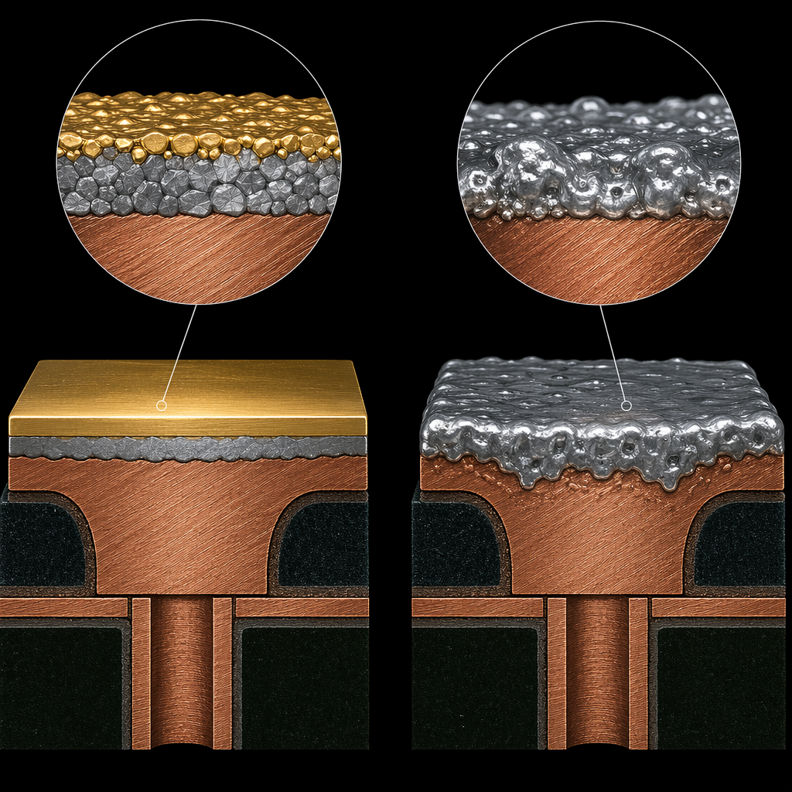
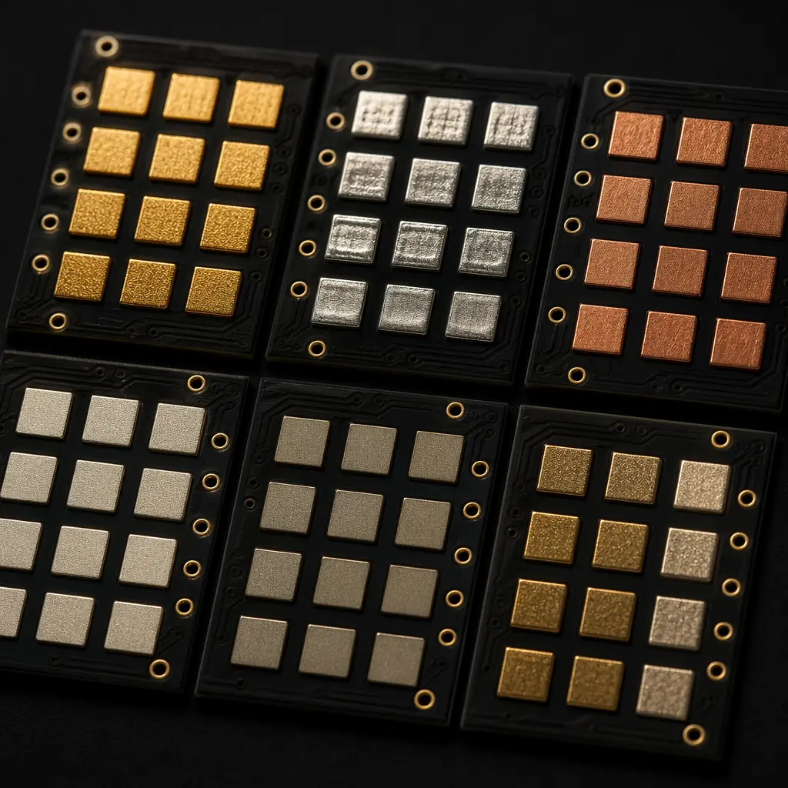
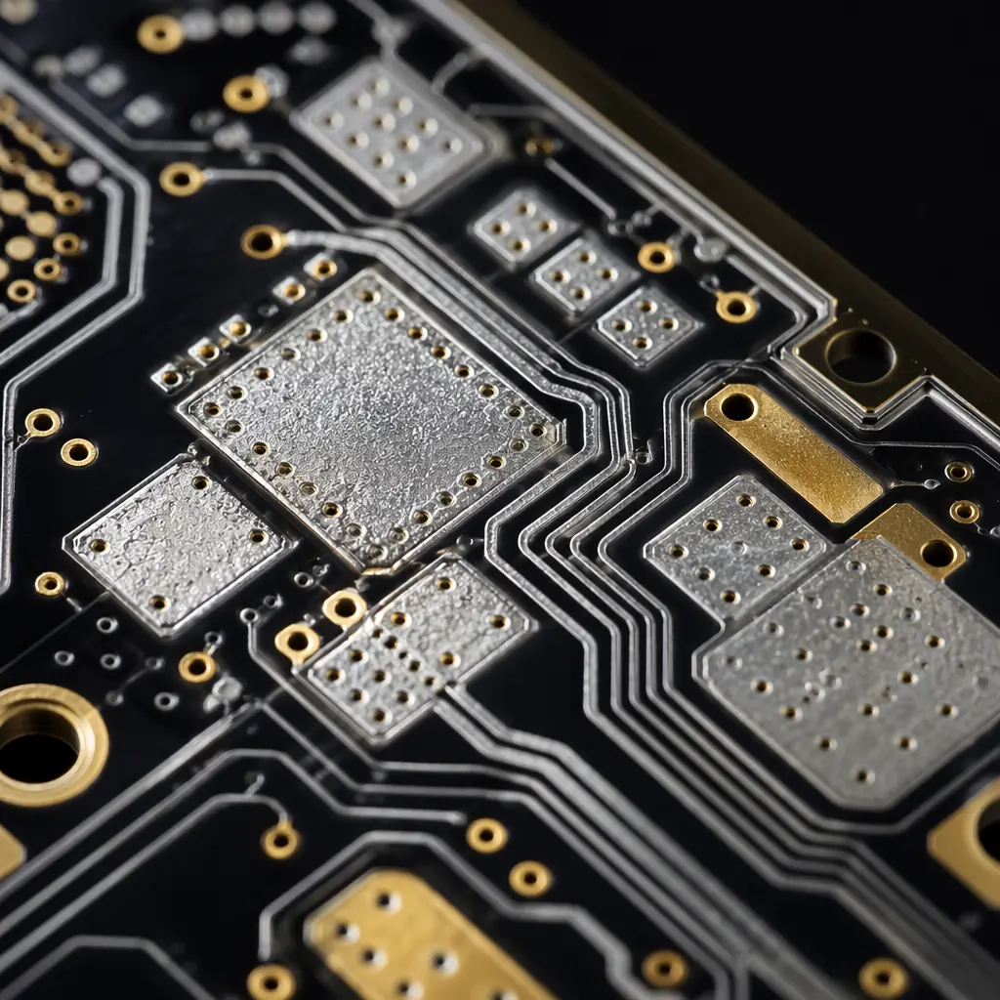
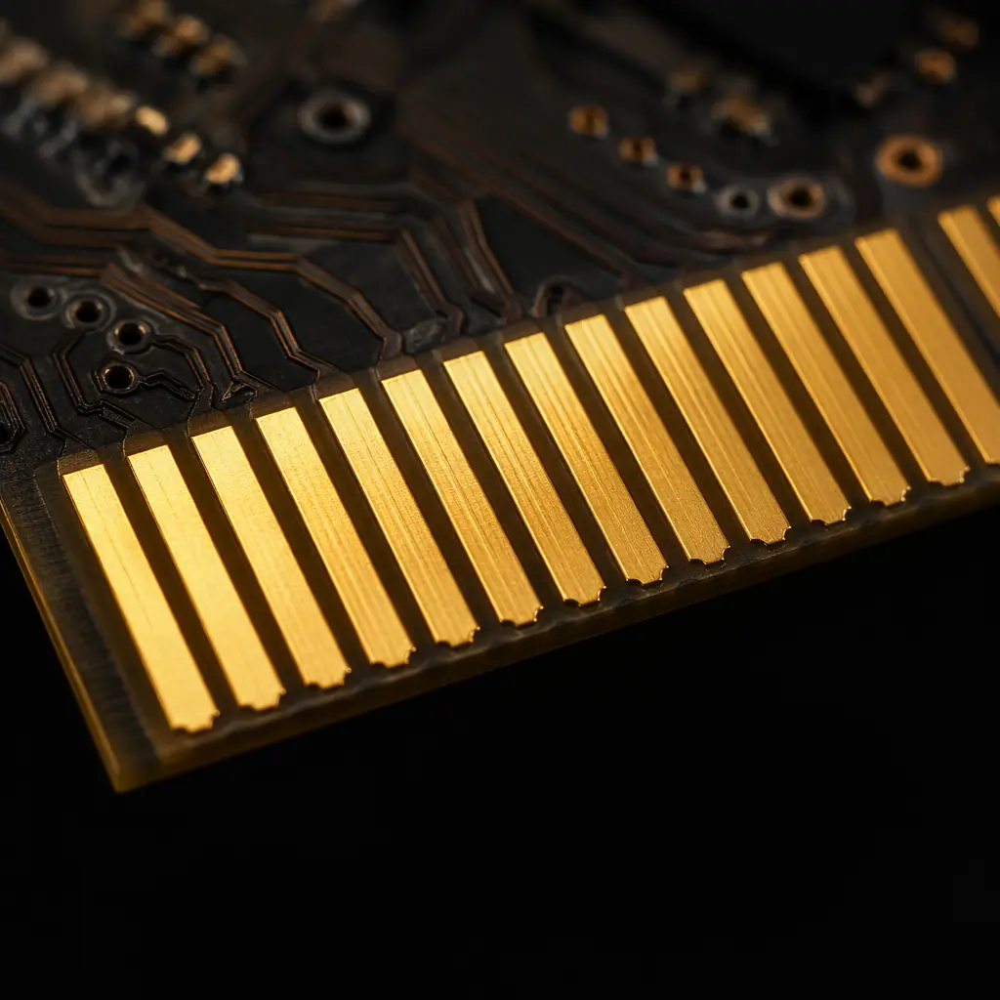

The surface finish on a PCB is its interface to the world. It determines solderability, shelf life, contact resistance, wire bondability, and assembly yield. Yet it's often selected by habit — "I've always used ENIG" or "HASL is cheaper" — without considering the application's actual requirements.
At Huaxing PCBA, we process all seven major surface finishes in-house. Here's a data-driven comparison to help you choose the right one — not the one you've always used.

The Seven Finishes at a Glance
| Finish | Thickness | Shelf Life | Relative Cost | Flatness | Wire Bond |
|---|---|---|---|---|---|
| HASL (Lead-Free) | 1–40μm | 12 months | 1.0× (baseline) | Poor | No |
| ENIG | Au 0.05–0.12μm / Ni 3–6μm | 12 months | 1.2× | Excellent | Al/Au |
| OSP | 0.2–0.5μm | 6 months | 0.95× | Excellent | No |
| Immersion Silver | 0.15–0.5μm | 6–12 months | 1.1× | Excellent | Al |
| Immersion Tin | 0.8–1.2μm | 6 months | 1.1× | Excellent | No |
| ENEPIG | Au 0.05–0.15μm / Pd 0.05–0.1μm / Ni 3–6μm | 12+ months | 1.5× | Excellent | Al/Au/Cu |
| Hard Gold | Au 0.5–2.0μm / Ni 3–6μm | 24+ months | 1.8× | Excellent | Al/Au |

ENIG: The Gold Standard (Literally)
Electroless Nickel Immersion Gold (ENIG) is the most widely specified finish for high-reliability applications — and for good reason. The nickel layer (3–6μm) provides a hard, flat surface that's ideal for fine-pitch components down to 0.3mm BGA pitch, while the thin gold layer (0.05–0.12μm) prevents oxidation and ensures excellent solderability for the full 12-month shelf life.
ENIG's real advantage is surface planarity. Unlike HASL, which leaves a slightly domed surface, ENIG is flat to within ±2μm — critical for QFN packages where coplanarity directly affects yield. Our factory data shows ENIG boards have a 0.4% lower defect rate on QFN soldering compared to HASL.
Black pad risk: ENIG's well-known failure mode — black pad (hyper-corrosion of the nickel layer causing brittle solder joints) — is almost entirely a process control problem, not an inherent finish defect. At Huaxing, our ENIG line maintains phosphorus content in the nickel at 7–9% (the safe zone), and every batch undergoes solderability testing. We haven't seen a black pad failure in over three years.
HASL: Still Relevant, Despite Its Age
Hot Air Solder Leveling is the oldest surface finish still in mainstream use. Modern HASL is lead-free (SAC305 alloy), environmentally compliant, and remains the most cost-effective finish for through-hole and coarse-pitch SMT boards. The thick solder coating (1–40μm) provides excellent solderability and is visually easy to inspect.
Where HASL fails: Fine-pitch components below 0.5mm. The uneven surface creates coplanarity issues, and the thick coating can bridge fine-pitch pads. If your design uses 0.5mm pitch or finer components, HASL is not recommended regardless of cost savings.
OSP: The Underrated Workhorse
Organic Solderability Preservative (OSP) is a thin (0.2–0.5μm) organic coating that prevents copper oxidation. It's the lowest-cost flat finish and the default choice for high-volume consumer electronics where boards are assembled within weeks, not months.
OSP's limitation: Shelf life. The organic coating degrades after 6 months and cannot withstand multiple reflow cycles (the coating burns off during the first reflow). For double-sided assembly, the second side must be assembled within 24 hours of the first reflow. It's also not inspectable — you can't visually verify the coating is intact — which rules it out for high-reliability applications.
Immersion Silver: High-Frequency Hero
Immersion silver (0.15–0.5μm) has gained adoption in RF and high-speed digital applications because silver has the highest electrical conductivity of any metal. At microwave frequencies, the skin effect means most current flows in the outermost 0.5–2μm — exactly where the silver sits. This translates to measurably lower insertion loss compared to ENIG at frequencies above 10GHz.
The creep corrosion caveat: Silver is susceptible to creep corrosion in high-sulfur environments. If the board will operate in industrial settings with sulfur-containing atmospheres, specify immersion silver with an anti-tarnish coating, or switch to ENIG.

ENEPIG: When One Gold Layer Isn't Enough
Electroless Nickel Electroless Palladium Immersion Gold adds a palladium barrier layer (0.05–0.1μm) between the nickel and gold. This eliminates the black-pad failure mechanism entirely and enables all three major wire bonding types: aluminum, gold, and copper. ENEPIG is the go-to finish for mixed-technology boards that combine SMT assembly with wire-bonded bare die — common in RF modules, sensors, and advanced packaging.
The cost premium over ENIG is approximately 25%, but for wire-bonded applications, ENEPIG's triple bond capability eliminates the need for selective plating (which costs far more).
Hard Gold: Not for Soldering
Hard gold (0.5–2.0μm, with cobalt or nickel hardeners) is an edge connector and keypad contact finish, not a soldering finish. The thick gold layer dissolves into solder joints and causes gold embrittlement — a brittle intermetallic that fails under thermal cycling. Use hard gold selectively (plated on edge connectors only) and specify a different finish for SMD pads. Selective hard gold adds approximately $3–6 per board depending on the plated area.

Decision Matrix
Choose HASL if: through-hole dominant, pitch >0.5mm, cost is primary driver, assembly within 6 months.
Choose ENIG if: fine-pitch (<0.5mm), BGAs present, flatness required, 12-month shelf life needed, Al or Au wire bonding.
Choose OSP if: high-volume consumer, single-sided SMT, assembly within 4 weeks, lowest cost flat finish.
Choose Immersion Silver if: RF/microwave (>10GHz), low insertion loss critical, assembly within 6 months, non-sulfur environment.
Choose ENEPIG if: mixed SMT + wire bond, triple bond type needed, zero black-pad risk tolerance.
Choose Hard Gold if: edge connectors, mechanical contact surfaces, >1000 mating cycles required.
The Bottom Line
Surface finish selection is an engineering decision, not a default. The right finish depends on your component mix, assembly timeline, operating environment, and reliability requirements. At Huaxing PCBA, we provide surface finish recommendations as part of our free DFM review — not based on what's easiest for us, but what delivers the best outcome for your specific application. All seven finishes are processed in-house with the same quality standards.